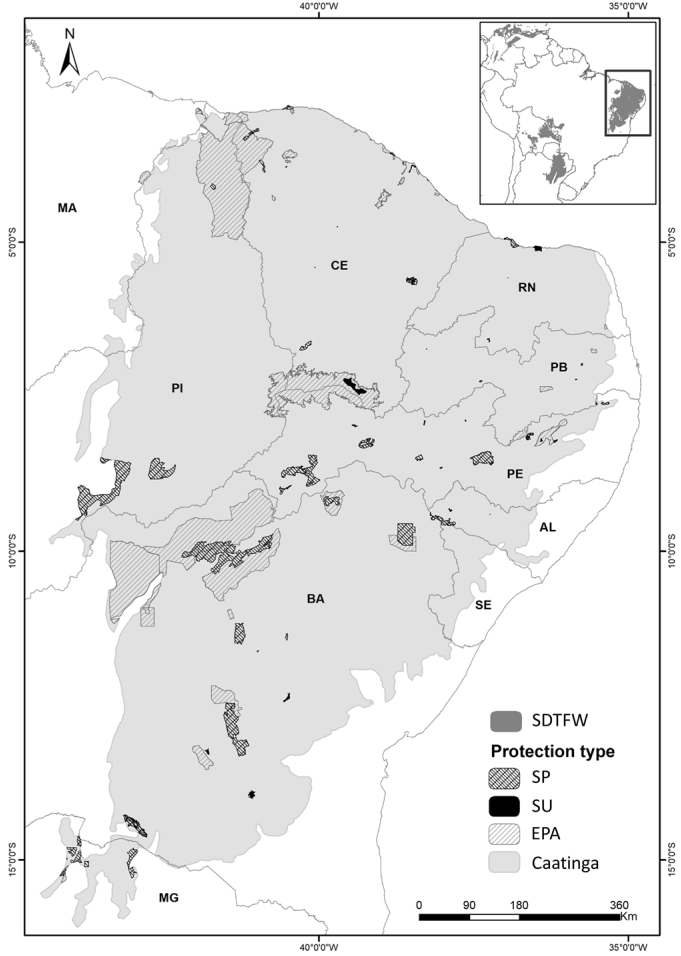

| Classificação de Ameaça Anuros do Brasil | ||
|---|---|---|
| Categoria | N | |
Não Preocupante |
LC |
880 |
Dados Deficientes |
DD |
85 |
Criticamente Ameaçada |
CR |
34 |
Quase Ameaçada |
NT |
27 |
Vulnerável |
VU |
15 |
Ameaçada |
EN |
10 |
Extinta |
EX |
2 |
Dados do pacote amphiBR com base na avaliação da portaria 300/2022 - MMA/Salve ICMBio |
||
Desafios e perspectivas da biodiversidade dos Anuros das Caatingas da Bahia
Paulo Barros ![]()
Disclaimer
Let’s crunch some numbers
Brasil: um hotspot global de biodiversidade de Anuros
1144
espécies1
20 famílias
107 gêneros
92%
AVALIADAS2
Brasil: um hotspot global de biodiversidade de Anuros
5%
EM ALGUMA CATEGORIA DE AMEAÇA1
Phrynomedusa fimbriata
Boana cymbalum
Anurofauna Bahiana
199
espécies1
17 famílias
51 gêneros
89%
AVALIADAS2
Anurofauna Bahiana
| Anuros da Bahia | |||||
|---|---|---|---|---|---|
| Espécies por família | |||||
| Família | N | Família | N | ||
Hylidae |
89 |
45% |
Cycloramphidae |
3 |
|
Leptodactylidae |
39 |
20% |
Eleutherodactylidae |
3 |
|
Bufonidae |
14 |
Centrolenidae |
2 |
||
Microhylidae |
11 |
Ceratophryidae |
2 |
||
Odontophrynidae |
10 |
Allophrynidae |
1 |
||
Phyllomedusidae |
9 |
Aromobatidae |
1 |
||
Craugastoridae |
6 |
Hylodidae |
1 |
||
Hemiphractidae |
4 |
Pipidae |
1 |
||
Brachycephalidae |
3 |
||||
Dados do pacote amphiBR com base na avaliação da portaria 300/2022 - MMA/Salve ICMBio |
|||||
19%
DA DIVERSIDADE DE ESPÉCIES DO BRASIL1
Anurofauna Bahiana
| Grau de Ameaça dos Anuros da Bahia | ||
|---|---|---|
| Categoria | N | |
Não Preocupante |
LC |
179 |
Dados Deficientes |
DD |
11 |
Quase Ameaçada |
NT |
7 |
Criticamente Ameaçada |
CR |
1 |
Ameaçada |
EN |
1 |
Dados do pacote amphiBR com base na avaliação da portaria 300/2022 - MMA/Salve ICMBio |
||
| Grau de Ameaça dos Anuros da Bahia | |||||
|---|---|---|---|---|---|
| Família | Espécie | CAA | AF | CER | |
Odontophrynidae |
Proceratophrys sanctaritae |
CR |
|||
Hylidae |
Sphaenorhynchus bromelicola |
EN |
|||
Cycloramphidae |
Cycloramphus migueli |
NT |
|||
Hylidae |
Nyctimantis arapapa |
NT |
|||
Hylidae |
Bokermannohyla flavopicta |
NT |
|||
Hylidae |
Dendropsophus studerae |
NT |
|||
Microhylidae |
Dasypops schirchi |
NT |
|||
Phyllomedusidae |
Phasmahyla spectabilis |
NT |
|||
Phyllomedusidae |
Phasmahyla timbo |
NT |
|||
Dados do pacote amphiBR com base na avaliação da portaria 300/2022 - MMA/Salve ICMBio |
|||||
Anurofauna Bahiana
Desafios nas pesquisas dos Anuros Catingueiros
Viéses históricos nas descrições de anfíbios no Brasil
Gaps importantes de amostragem em áreas potenciais

2000 - Presente
diversidade interesse
Grandes áreas da Caatinga nunca foram amostradas
Muitos aspectos da Ecologia da Caatinga ainda desconhecidos
Alguns grupos taxonomicamente complicados
Áreas Ecotonais ainda pouco estudadas
Complexidade ecológica e climática das Caatingas
CAATINGA
Bioma, província, domínio, ecoregião e tipos de vegetação
Ecologicamente e Evolutivamente Heterogênea:
- Seasonally dry tropical forest and woodland
- Savannas
- Tropical Rain Forests
- Rupestrian Grasslands
Baixa Disponibilidade de Água
- Pressões seletivas limitantes da diversidade
- Endemismos ainda mais importantes
Uma eterna corrida contra o relógio
Uma eterna corrida contra o relógio
97% das áreas sazonais secas estão em risco iminente
67% destes remanescentes encontram-se no Neotropico, com a Caatinga sendo o maior remanescente, e totalmente restrito ao Brasil
Caatinga: PIB do Brasil, altamente populosa, de baixa prioridade de conservação e sobre alta e constante pressão antropogênica
Maioria das áreas protegidas na Caatinga são APAs (Área de Proteção Ambiental), a categoria mais permissiva de classificação pelo SNUC

Uma eterna corrida contra o relógio

Áreas de Proteção FUNCIONAM!
LABHERPETO - UESB
Explorando as Caatingas da Bahia
Coordenadora LABHERPETO
“La Jefa”
Biologia Reprodutiva (Boana crepitans (Nascimento et al. 2015), Physalaemus kroyeri (Gally and Zina 2013)), Morfologia (Ceratophrys aurita (DE MIRA-MENDES et al. 2022)), Distribuição (Leptodactylus caatingae (Novaes-e-Fagundes et al. 2016)), Inventários (Brejo Novo, Jequié - BA (A. S. F. L. Silva, Júnior, and Zina 2013)), Bioacústica (Scinax camposseabrai (NOVAES and ZINA 2016)), Dieta (Phyllodytes tuberculosus (Oliveira, Silva, and Zina 2021)), Ecologia de Estradas (Bastos et al. 2019)
O que vem por aí …
Finalizados:
Phyllomedusa bahiana Variação morfológica em gradientes ambientais (Deivson Fraga)
Rhinella sp Zonas de hibridização (Ana Paula)
Boana crepitans Variação intraespecífica (Paulo Barrros)
Bokermannohyla capra Uso do ambiente, Esforço reprodutivo e comportamento (Gessica Ramos)
Comunidade de Anuros Efeito de áreas protegidas na riqueza/diversidade (Marina Faraulo)
Scinax eurydice, Trachycephalys atlas, Dermatonotus mulleri, Leptodactylus payaya e Boana crepitans. Tolerância térmica em girinos (Marcos Oliveira)
Estrutura de comunidades de Girinos FLONA Contendas (Jamille Freitas)
O que vem por aí …
Em Andamento:
Ceratophrys aurita Citogenética (Alice Barreto)
Proceratophrys criaticeps, Rhinella granulosa, Dermatonotus muelleri, Physalaemus albifrons e P. cicada, Leptodactylus caatingae e L. troglodytes Investimento Reprodutivo (Natália Nascimento)
Ecologia de Estradas Vertebrados Atropelados BR-026 (Gustavo Abreu)
Hora de vender meu peixe …

Pacote R com dataset da publicação oficial da Lista de Anfíbios do Brasil publicada pela Sociedade Brasileira de Herpetologia.
O pacote atualmente conta também com informações sobre o status de conservação, nome comum, ocorrências por estado da federação, endemismo e ocorrências por biomas. Todas obtidas através da última avaliação do MMA (2022) sobre os anfíbios do Brasil. Também incluímos no pacote informações do Brazilian Tadpole Database (Provete et al., 2012), com informações sobre as espécies que atualmente possuem a descrição dos girinos.
Obrigado!
pbarrosbio@gmail.com
@pbarrosjr
@pbarrosjr.bsky.social
github.com/paulobarros
Referências
X-WGBC: Desafios e perspectivas da biodiversidade dos Anuros das Caatingas da Bahia
Almeida, Ana Paula, Deivson Fraga de Oliveira Bastos, Paulo Barros de Abreu Júnior, Marcos Ferreira Vila Nova, Iuri Ribeiro Dias, and Juliana Zina. 2022. “New Records and Geographic Distribution Map of Proceratophrys Sanctaritae Cruz &Amp; Napoli, 2010 (Anura, Odontophrynidae).” Check List 18 (6): 1243–47. https://doi.org/10.15560/18.6.1243.
Bastos, Deivson Fraga de Oliveira, Ricardo Alves Teixeira Souza, Juliana Zina, and Clarissa Alves da Rosa. 2019. “SEASONAL AND SPATIAL VARIATION OF ROAD-KILLED VERTEBRATES ON BR330, SOUTHWEST BAHIA, BRAZIL.” Oecologia Australis 23 (03): 388–402. https://doi.org/10.4257/oeco.2019.2303.01.
DE MIRA-MENDES, CAIO VINICIUS, JAMILLE FREITAS DIAS, RENAN NUNES COSTA, CLAYLTON DE ABREU COSTA, EDVALDO MOREIRA DA SILVA NETO, LUIZ NORBERTO WEBER, and JULIANA ZINA. 2022. “Redescription of the External and Internal Oral Cavity Morphology of the Tadpole of Ceratophrys Aurita (Raddi, 1823) (Anura: Ceratophryidae) from the Caatinga Domain, Bahia, Northeast Brazil.” Zootaxa 5124 (5): 594–600. https://doi.org/10.11646/zootaxa.5124.5.8.
Gally, M. C., and J. Zina. 2013. “Reproductive Behaviour of Physalaemus Kroyeri (Anura: Leiuperidae) in the Municipality of Jequié, State of Bahia.” Journal of Natural History 47 (23-24): 1627–44. https://doi.org/10.1080/00222933.2013.769643.
Garda, Adrian Antonio, Mariana Garcez Stein, Ricardo Bonfim Machado, Marília Bruzzi Lion, Flora Acuña Juncá, and Marcelo Felgueiras Napoli. 2017. “Ecology, Biogeography, and Conservation of Amphibians of the Caatinga.” In, 133–49. Springer International Publishing. https://doi.org/10.1007/978-3-319-68339-3_5.
Guerra, Vinicius, Lucas Jardim, Diego Llusia, Rafael Márquez, and Rogério Pereira Bastos. 2020. “Knowledge Status and Trends in Description of Amphibian Species in Brazil.” Ecological Indicators 118 (November): 106754. https://doi.org/10.1016/j.ecolind.2020.106754.
Luedtke, Jennifer A., Janice Chanson, Kelsey Neam, Louise Hobin, Adriano O. Maciel, Alessandro Catenazzi, Amaël Borzée, et al. 2023. “Ongoing Declines for the World’s Amphibians in the Face of Emerging Threats.” Nature 622 (7982): 308–14. https://doi.org/10.1038/s41586-023-06578-4.
Nascimento, Ana Paula Barbosa, Arhetta Almeida, Amanda Santiago Ferreira Lantyer-Silva, and Juliana Zina. 2015. “Biologia Reprodutiva de Hypsiboas Crepitans (Amphibia, Anura, Hylidae).” Boletim Do Museu de Biologia Mello Leitão, 271–91.
NOVAES, GABRIEL, and JULIANA ZINA. 2016. “Advertisement Call of Scinax Camposseabrai (Bokermann, 1968) (Anura: Hylidae), with Comments on the Call of Three Species of the Scinax Ruber Clade.” Zootaxa 4084 (2). https://doi.org/10.11646/zootaxa.4084.2.5.
Novaes-e-Fagundes, Gabriel, Jamille Freitas, Michael Cardoso, Tales Barbosa, and Juliana Zina. 2016. “Leptodactylus Caatingae. Geographic Distribution.” Herpetological Review 47 (September): 419.
Oliveira, Silvana Souza de, André Teixeira da Silva, and Juliana Zina. 2021. “Diet of a Bromeligenous Species of Treefrog in the Brazilian Semiarid.” Brazilian Journal of Biology 81 (2): 411–17. https://doi.org/10.1590/1519-6984.229742.
Silva, Amanda S. F. Lantyer, Sérgio Siqueira Júnior, and Juliana Zina. 2013. “Checklist of Amphibians in a Transitional Area Between the Caatinga and the Atlantic Forest, Central-Southern Bahia, Brazil.” Check List 9 (4): 725. https://doi.org/10.15560/9.4.725.
Silva, José Maria Cardoso da, Luis Cláudio Fernandes Barbosa, Inara R. Leal, and Marcelo Tabarelli. 2017. “The Caatinga: Understanding the Challenges.” In, 3–19. Springer International Publishing. https://doi.org/10.1007/978-3-319-68339-3_1.
Teixeira, Marília Gomes, Eduardo Martins Venticinque, Marília Bruzzi Lion, and Míriam Plaza Pinto. 2021. “The Brazilian Caatinga Protected Areas: An Extremely Unbalanced Conservation System.” Environmental Conservation 48 (4): 287–94. https://doi.org/10.1017/s0376892921000308.